Got some family commitments this weekend, gonna be tricky to fit in
multi-hour print jobs. Gotta keep things simple for a change. Main
thing to keep in mind is to budget about an hour print time for
each inch of "boundig box" for your print. In other words, something
6 inches across would take about six hours.
Can I Teach A Lamp to Fly?
If I take my airfoils and rotate them into a hoop, I'd have something
like a jet engine. I could have a 3d-printed hub in the middle to hold
the "turbine blades" .... time to sketch.
I might be on to something.
Ok, I can print a ton of thin
cardboard symmetrical airfoils simialr to Homework 2. If I can figure
out how to score my spars so they bend into a hoop -- or, use
strategically-flimsy material, I'll have my jet engine. Some rigid
mateiral in a cross could keep the hoop together. A cone-saped "spinner"
would be a good 3d print.
Making the Fan Face .. with a Twist
To really make it look like a jet engine, I need the front (or top?) of
the lamp to look like this:
Must .... resist ... urge to make ... complex .. parts!!!
Ahem, ok. My blades can be simple rectangles, laser-cut from twistable
material. The nose cone could have vertial slots, while the hoop has
slots at an angle. Or just keep them straight, and the light will
probalby shine through better. Probalby stick with no-twist, so I can
re-use my USPS cardboard and slot measurements from Assignment 2.
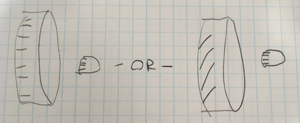
Keep it Simple, Stupid (ignore that twist on the right.)
How am I Going to Put a Lamp in This Thing?
Probably a central I-beam with a couple cross pieces.
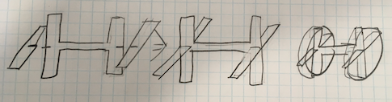
Lamp Framework
Heyyyy Maybe I Can Re-Use My Wing.
It just-so-happens my lamp-innnards are actualy an LED strip light.
Furthermore, it just-so happens to fit perfectly on my Assingment 2
wing.
Hmmmmm......
If I replicate a bunch of ribs, I can hopefully create some nice light
interplay.
To heck with the jet engine idea, I'm making this!
DAY TWO: What am I Actually Gonna 3D Print?
I have a first-world problem. My lamp actually comes with an adhesive
mounting system that will work perfectly with my wing ... no 3D printed
brackets required.
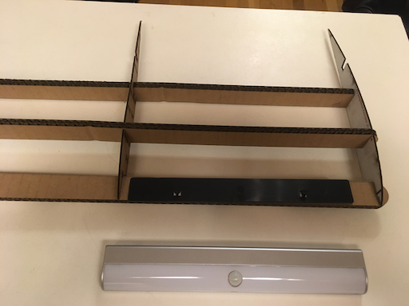
First World Poblem: Don't Need 3D Printed Brakcets
What I can do though, is 3D Print some kind of struts or feet,
to get my lamp off the desk. Try for a "upper wing of a biplane" look.
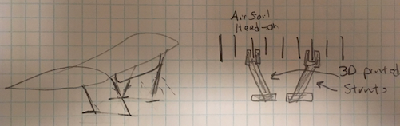
Struts, Maybe?
So these struts are going to reach up and clip onto the wing. Maybe
the thin arifoils; maybe the thick spars. I'm going to need to 3D
print a slot tester. One way would be a simple block with two slots
cut at right angles. This could form the "head" of the strut that
clips onto both the airfoil and the spar.
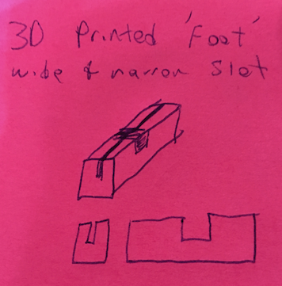
Simple Block with two slots.
Easy to print ... but will I get it right the first time? Maybe I
should 3D print a version of by gauge. I can make it thiner to use
less material (and time). Also, these ideas are coming rapidly
when I'm away from my sketchbook, so switching to post-its.
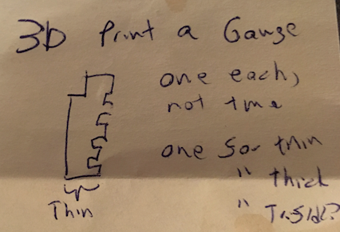
Simple Block with two slots.
OK, Let's Form a Plan and Get CADDING!
Cool, two parts to 3D print and some incremental mods to my Grasshopper
files. Given the long lead times, I need to sequence things.
3D Printable Gauge I'm worried the plastic will behave
differently from cardboad, and the cardboard slot widths I developed
won't carry over. This is a job for a gauge!
Two-slot block This will validate my slot choice
before I commit the time & material to a full-on strut.
Struts Re-use the two-slot block, or maybe a one-slot
verison of it. This should be queued up such that all I need to do is
fine-tune the slot-width before printing.
Wing Spar with More Slots A pretty easy mod to last
week's grashopper code.
Airfoil with Lamp-notch Cut Out Probably plenty of
time for lasercutting while I wait for 3D prints.
Prepping the Gauge in Grasshopper
Shrunk down my Assingment 2 Gauge down to 1 inch by 0.5 in. Besides the
input siders I used last week, I had "configuration sliders" stashed
around to control overall gauge width and height, as well as the size of
THE NOTCH. Parameterization is starting to pay off.
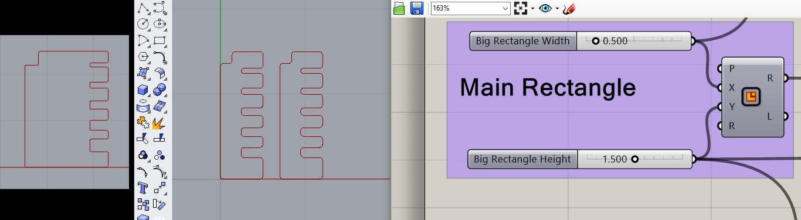
Original Gauge (left), Resized Gauage (center), Rectangle controls (right).
By selecting an element upstream of my original output, I can
bake one gauge instead of two.
Bake one gauge instead of two.
Making it 3D in Rhino
Extrude and Cap seemed ok, but I'm
worried about how it's rendering hopefully just a wierd artifact with
my VM's virtual graphics card.
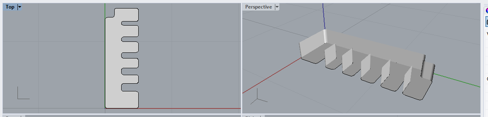
Render problem or geometry problem?
Bringing it into Dremel DigiLab
Tried Dremel DigiLab, couldn't see anything. Tried Contangent, it prompted me to
convert mm to inches, then looked fine.
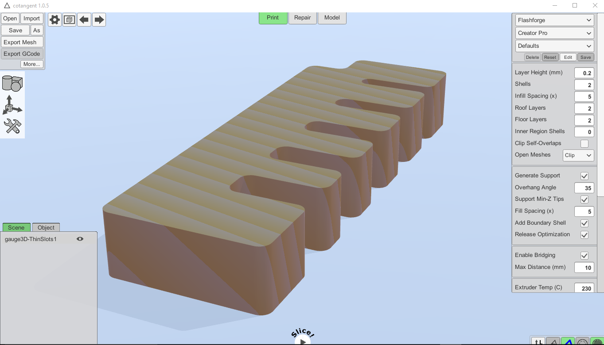
Looks okay in Cotangent
DAY THREE: Only Have a Few Hours - Make 'em Count
Getting Dremel DigiLab To Work
Had trouble runing Dremel DigiLab last night, but got it going today. Looks
like my 3D Gauge works there too. Looks like I'll need to use Cotangent to
convert units, then Digilab for the final printing. Maybe I could print
through Cotangent, or do unit conversion with DigiLab, but right now I'm in
a mood to go with any workflow that ... works, not necessarily the leanest
one.
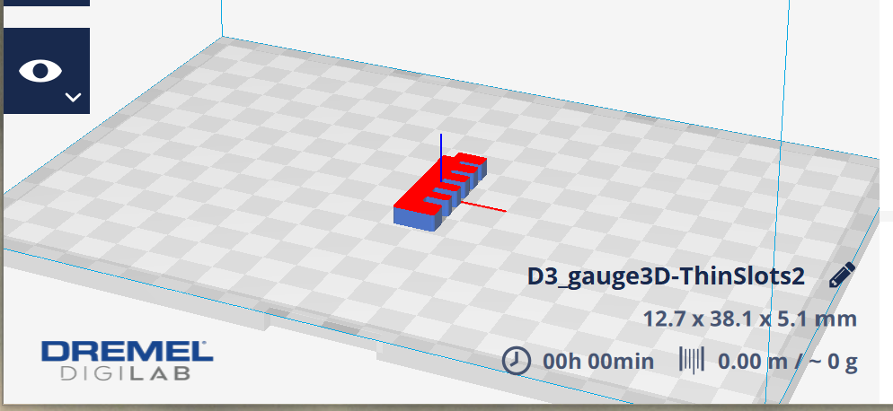
Dremel DigiLab seems to have worked, too.
Reading the Actual Assingment
Turns out use of glue is forbidden, so I really shouldn't use that
self-adhesive bracket that came with with my lamp-guts. Gonna need to
develop a bracket-thingy after all.
DAY FOUR: Bracketry
Last night's big reveal was that I can't use the adehive strip, so here's
a sketch of a 3D-printable lamp braket.
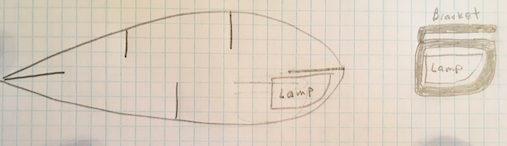
Lamp Bracketry
Made it to the MILL. Let's Print Something
My Dremel DigiLab pic from last night says my gauge is going to be 12.7 x
38.1 x 5.1 mm big. The thinner it is, the faster it will print. Checking a
3D Print Test Piece in the MILL, I'm seeing 3mm as a baseline thickness
(below.) I'll call 5mm close enough and start printing.
3mm thick ... 5mm should be close enough.
Opened my 3D gauge in Dremel DigiLab again, chose Orientation
then Lay Flat, with Snap Rotation turned on.
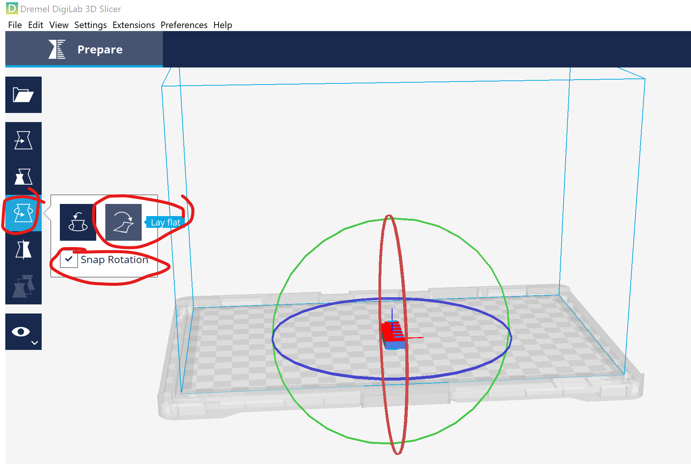
Getting things orientated in Dremel DigiLab.
First Attempt at 3D Printing
Or ... Muddling my way through the Dremel 3D45 Touch Screen
Go to printer, start with Level.
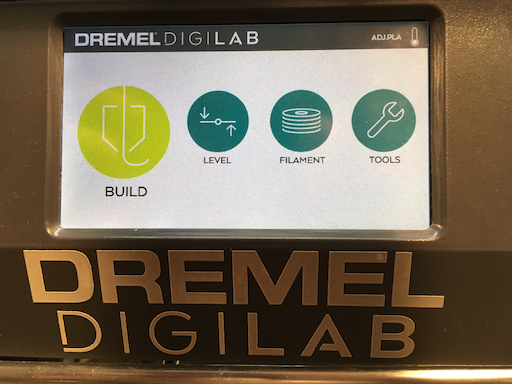
Opening Screen
Got prompted to turn a couple knobs.
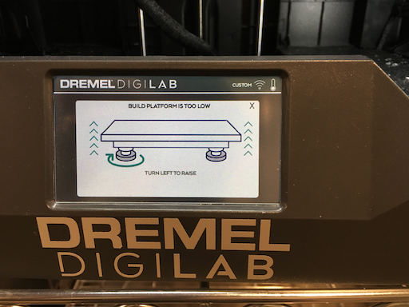
Leveling
Go through the change filament procedure. Good thing I did, I can see how it
purges the old material from the nozzle.
Selected PLA as filament type. Set nozzle temp to 235 per slack
instructions, all other settings left as default. Got some kind of warning
that says Extruder range 190-230. All I can do is click Accept.
Ah, back at filament settings, pull the nozzle temp down to 230. Later on,
Jo Jo let me know you can go into custom settings to get past 230 on nozzle
temperture.
Clicking Build now. Can't find where to transfer files from
USB onto printer. Check the Tools page. Found an option to
Pre-Heat. Seems like a good thing to kick off while I
continue figuring out how to copy form USB.... aaaaand .. now I'm stuck
until pre-heat finishes.
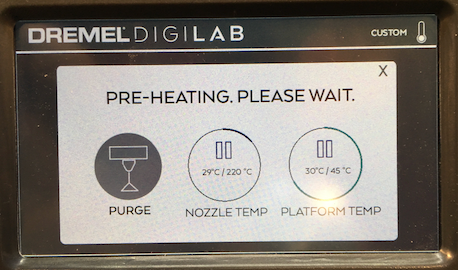
Uh-oh
Also gotta apply glue, hope the bed istn't too hot. Nope, we're good.
Ah, found the MILL Dremel 3D45 Ideamaker checklist. The machine will
copy files from my USB. Pre-heat seems to still be pre-heating ...
Exit (i.e. gentle rage-quit) out of pre-heat, start an actual print ...
nothing. Wrong file format? Object too small? Back to DigiLab software.
Okay ... the MILL checklist says to use .g3drem files instead of gcode.
So .... how do I convert? Talked to MILL staff, they said switch the DigiLab
software settings to 3D40 instead of 3D45.
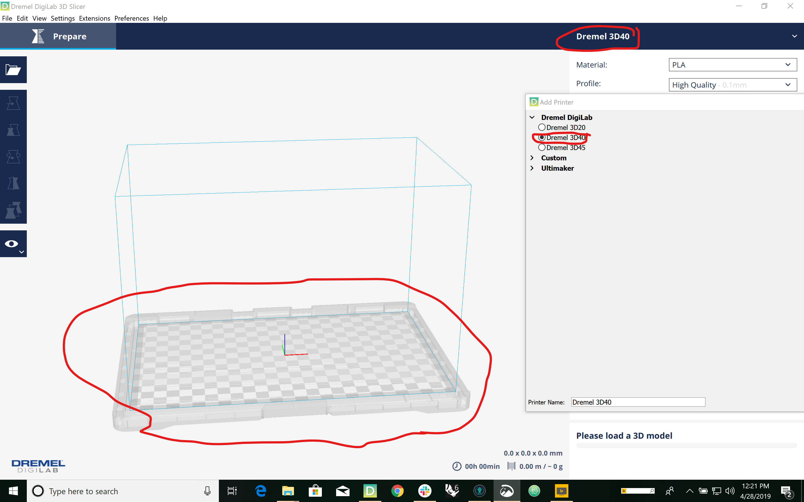
Digilab Configurtion Hack
Now What?
Nothing seem to be coming out. Nozzle temperature was too low, so I stopped
the build. Went back to Filament on the touch screen,
then View Filament Settings. Nozzle says 230 like I wanted.
Try 235; still forbidden.
Back to preheat, try Purge Nozzle. Purge isn’t doing anything,
try Change Filament. Still nothing coming out. Got help from
UW MILL staffer Jo Jo, she had me use a new printer. Scrape the Build Platform
clean, Re-do the leveling process, kick off a print, and wait with mild
anxiety untill ....
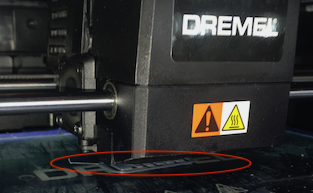
This looks encouraging
SUCCESS!! I HAVE A 3D GAUGE!
The printer threated it would take 29 hours, but finished in about 45 min.
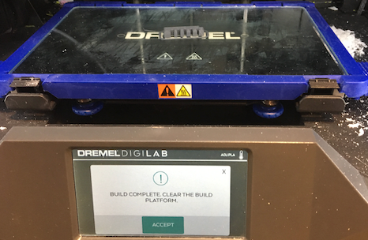
I got a Guage!
Laser Cut a Cardboard Vesion
Routine and uneventful (for a change). Used 25 speed, hundred power, hundred
frequency. Also set document size to 21 x 15.5
3D Print vs. Lasercut Cardboard
Like the 3D printed one, the tightest slot is the only one that works. The
differences is, the lascercut slot is noticably looser than the 3d-printed -
it just barely holds. Tempted to do another round, taking the tightest slot
and making it my new middle.
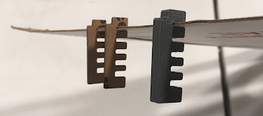
3D Print vs. lasercut cardboard. Why does the middle one look so angry?
DAY FIVE: Slots and Bracketry
Where I'm at; What's Next?
Okay ...
I know the optimal slot width for 3d prints.
I need a better slot width for laser cuts.
I need some lamp braketry
I need more spart slots, and airfoils with lamp cut-outs
Gearing Up For The Next 3D Print.
I know the slot thickness I need for 3d printing. I need to measure the
lamp guts and make the actual bracketry. Forgot my sketch book at home, so
we're back to post-its.
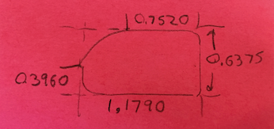
Lamp Guts Dimensions.
Okay, now with these dimensions, I can go into Rhino and draw up a couple
rectangles - one for the main bounding box of the lamp guts, another for
the rounded "cut-out" in the upper-right corner. Now is a good time to
try out
Dr. Gareth Paterson's
Grashopper NACA airfoil generator.
Converting to Milimeters
Hmm ... Dr. Paterson's Airfoil generator requires it. So, re-doing the
lamp-guts dimensions in mm, I have 30.76 x 16.4.
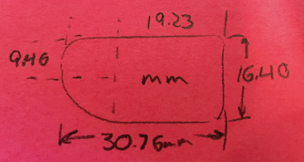
Re-measured, in mm. Don't check my math, it's really sloppy.
Using the Rectangle comand at the Rhino prompt, I can make
a rectangle in the exact size I want. On the Grashopper side, I can fille
with the NACA inputs to get compatible airfoil shape.
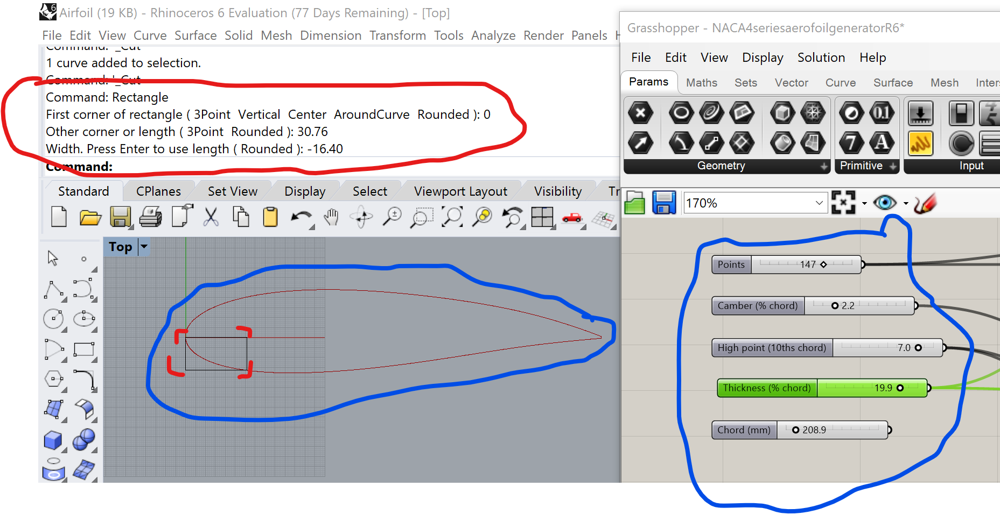
First-cut Airfoil
Looks kind of dull, also not sure how the curve of that airofil is really
going to line up with my lamp guts. Add another rectangle, tune the NACA
inputs and ...
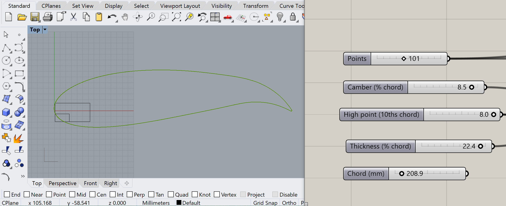
This one's worth printing
RESUME HERE
Let's print this and try it out. This time 1mm = 1mm
Keep it in mm (hope this works)
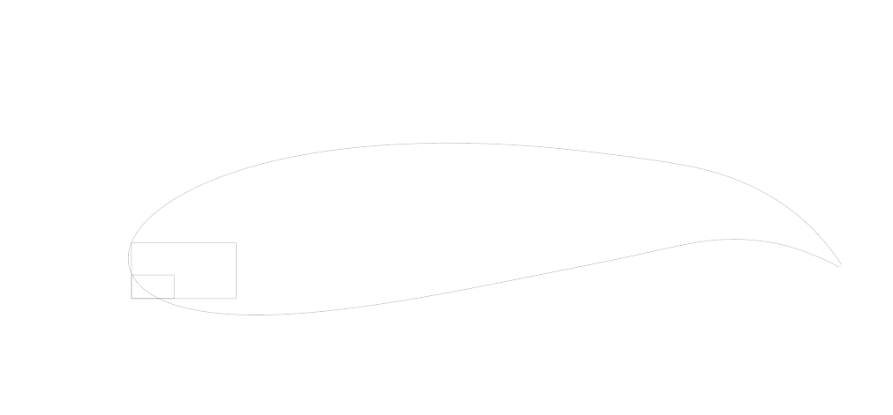
Looks good in Adobe IllustratorSuccess! But ...
The lasercut worked, but to really be an interesting play on light, the
lamp should be embedded deeper.
Hasty Email Notes
You have the slot thickness you need for the 3-D print. That top notch is
fully dialed in. You do need to dial in the slot thickness for the postal
cardboard. So today you’ll need to laser cut at least one more gauge to
dial in that slot, but any 3-D prints can be using the slot take miss
you already have.
So ....
Start with a trace of the lamp guts.
Make the hole a bit bigger to account for 3D printer slop.
Copy & scale up to ma.
Start with a trace of the lamp guts.
Start with a trace of the lamp guts.
Hmm.....
Start with an airfoil and a "bounding rectangle" for the bracket.
Trim the Rectangle against the airfoil, to establish outer shape of bracket.
Cut a "hole" to match the lamp-guts.
Cut a notch for the wing spar. This will use the 3D-print slot thickness.
Start with a trace of the lamp guts.
You know what? Now that I've thought about this, I'm going to have to work up
the overal dimensions of the lamp-wing before I do anything.
Overall Wing-Lamp Dimensions
Width and length, or Wingspann and Chord if you want to have fun with it.
Anyhow, using my Assingment 2 wing as a guide, i need a wingspan of 9.5
inches, about half of the Assingment 2 wing. I could use a thicker airfiol,
so let's CAD up the boundign rectangle for the lamp guts, and outer rectangle
for the bracket, and fire up
Dr. Gareth Paterson's
Grashopper NACA airfoil generator
So the Plan of the Day (POTD) is ...
Lasercut a new gauge with new/smaller slot width
CAD up a Lamp Braket. Lasercut first, then 3D print.
Plan for loose tolerances on the lasercut, which will firm up in the
3D print.
More Spar Slots. A bit of Grashopper work, can be done
while the lamp braketery are 3d printing.
Airfoils with Lamp Cutouts Best to do after I have 3D
printed bracketry.
{kind=link}